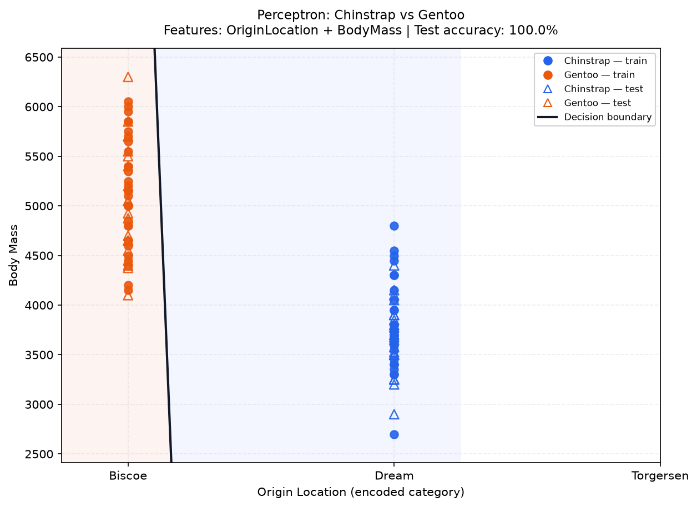
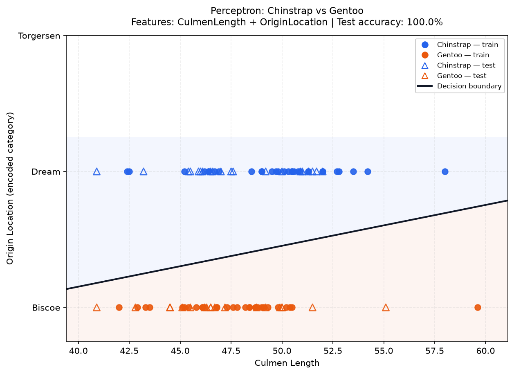
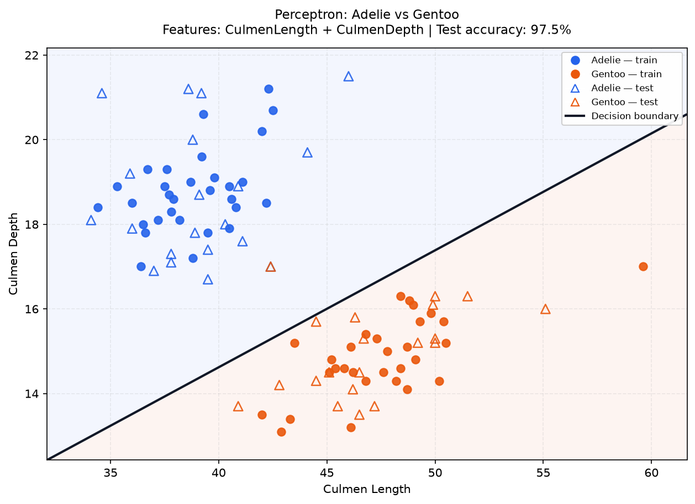
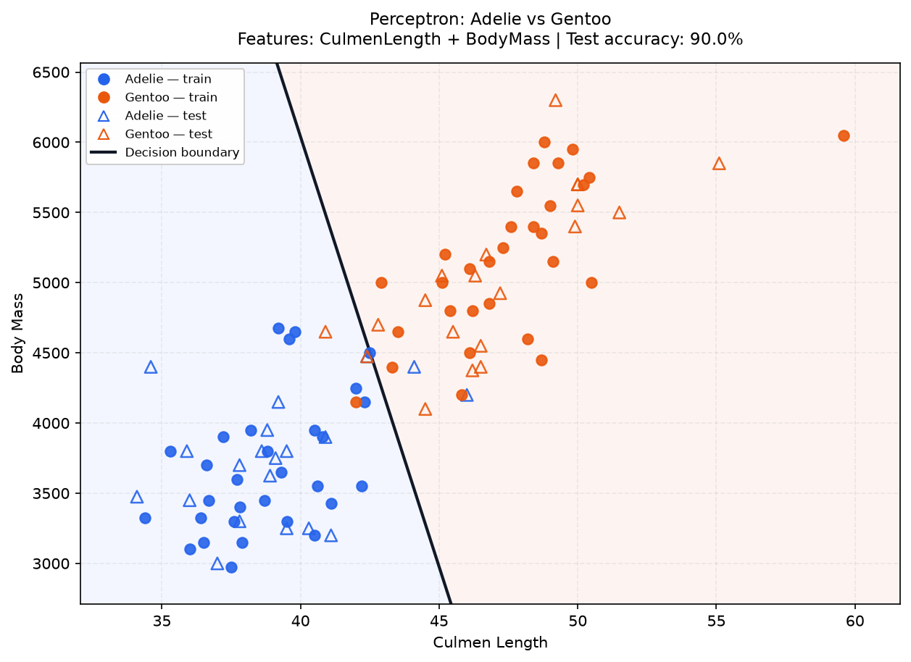
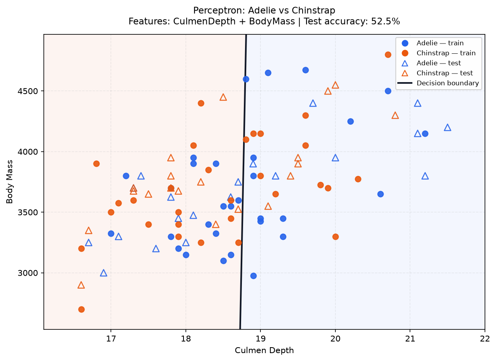
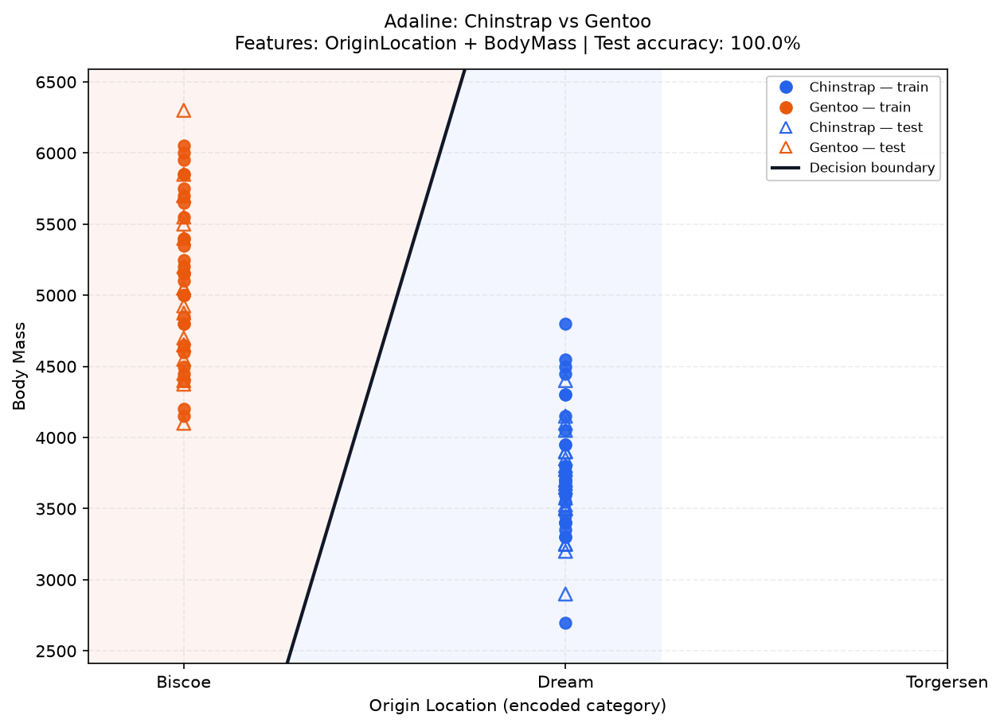
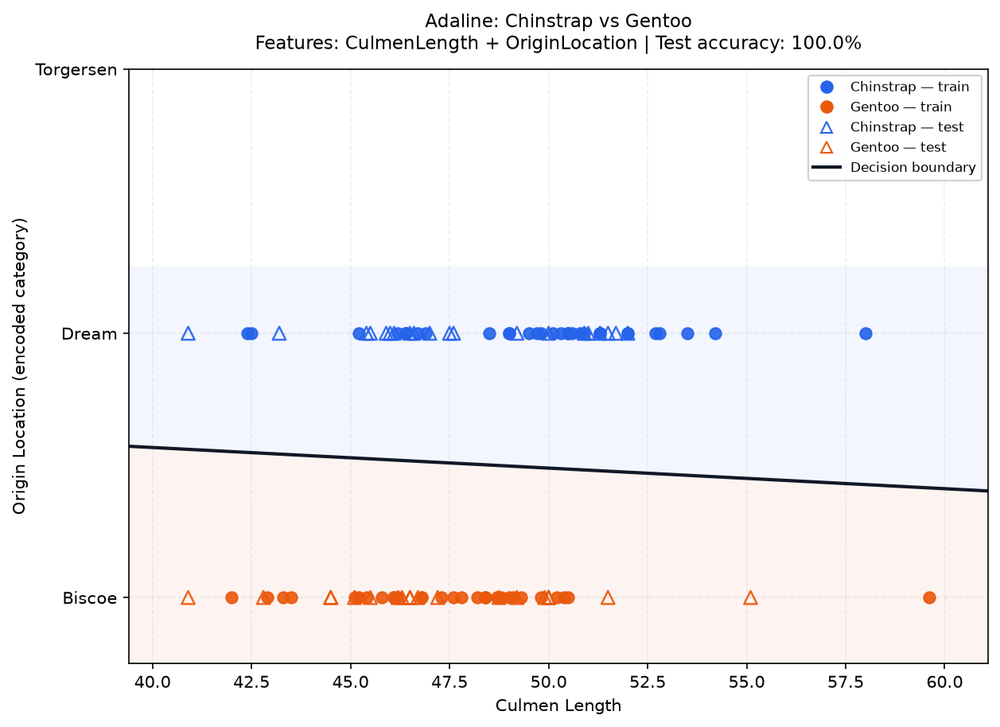
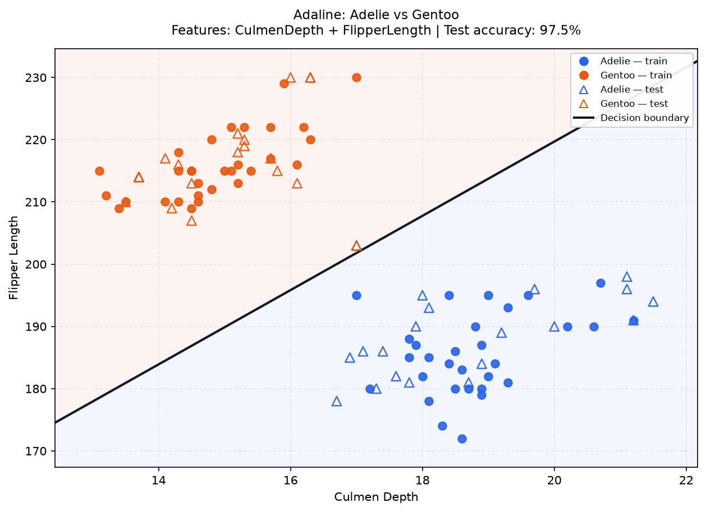
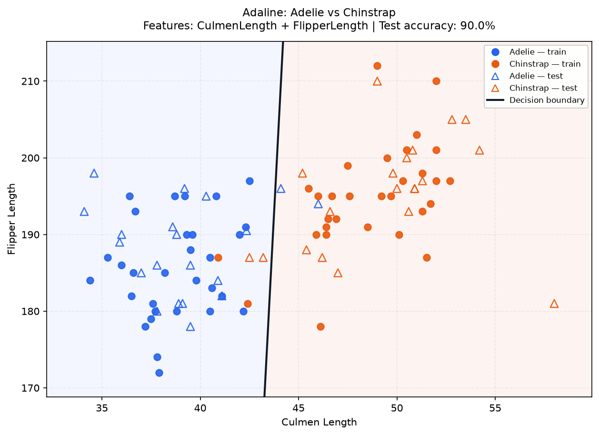
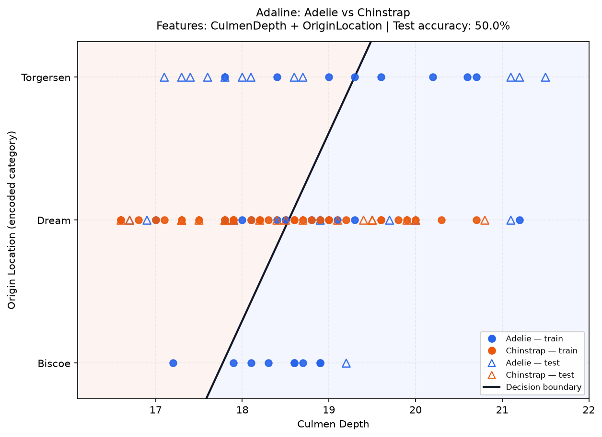

Penguins Binary Classification — Lab 3 Analysis Report
1. Objective
Implement and compare Perceptron and Adaline on two-class Penguins classification tasks using exactly two selected features, as required by Lab 3.
2. Dataset and preprocessing
- Dataset:
penguins.csv. - Rows preserved during loading: 150.
- Classes: Adelie, Chinstrap, Gentoo (the selected binary experiment uses the two classes shown in each result).
- Selectable features: CulmenLength, CulmenDepth, FlipperLength, OriginLocation, BodyMass.
- Numeric missing values are imputed with medians calculated from the training split only; no row is dropped.
OriginLocationis mapped to a deterministic numeric code so it remains one selectable feature and the visualization stays two-dimensional. This coding is nominal, not ordinal; numeric distance between location codes has no real-world meaning.- Each class contributes 30 non-repeated training samples and the remaining 20 testing samples. The fixed random seed is 42 so runs are reproducible.
- The two selected features are standardized with training-set means and standard deviations. Test data use the same training-derived values.
- Class A is encoded as -1; Class B as +1. Both decision boundaries are linear.
- No scikit-learn package or ready-made confusion-matrix utility is used. Confusion matrices and overall accuracy are computed by custom loops in
evaluation.py.
3. Training settings
The generated comparison uses learning rate = 0.01, maximum epochs = 150, Bias enabled, and MSE threshold = 0.01 for Adaline. The GUI lets the user change these values for an individual run. Perceptron updates weights when a sample is misclassified. Adaline uses stochastic gradient descent and updates its weights using the current sample's linear-output error; MSE is checked after each epoch.
4. Representative plots and analysis
Five different feature pairs are shown for each algorithm. Examples are selected across the observed performance ranking, from high to low. All 30 feature-pair/class-pair results per algorithm are included in experiment_results.csv.
4.1. Perceptron
1. Highest-performing example
- Classes: Chinstrap (Class A, -1) vs Gentoo (Class B, +1).
- Features:
OriginLocationandBodyMass. - Test accuracy: 100.0% (40/40 correct).
- Epochs used: 2; final training MSE: 0.9672.
| Actual \ Predicted | Class A | Class B |
|---|---|---|
| Class A | 20 | 0 |
| Class B | 0 | 20 |

Interpretation: The model shows strong separation on this test split. Class recalls are Class A 100.0% and Class B 100.0%. A linear classifier can only learn a straight decision boundary in the selected two-feature space.
2. Upper-range example
- Classes: Chinstrap (Class A, -1) vs Gentoo (Class B, +1).
- Features:
CulmenLengthandOriginLocation. - Test accuracy: 100.0% (40/40 correct).
- Epochs used: 2; final training MSE: 0.8727.
| Actual \ Predicted | Class A | Class B |
|---|---|---|
| Class A | 20 | 0 |
| Class B | 0 | 20 |

Interpretation: The model shows strong separation on this test split. Class recalls are Class A 100.0% and Class B 100.0%. A linear classifier can only learn a straight decision boundary in the selected two-feature space.
3. Middle-range example
- Classes: Adelie (Class A, -1) vs Gentoo (Class B, +1).
- Features:
CulmenLengthandCulmenDepth. - Test accuracy: 97.5% (39/40 correct).
- Epochs used: 2; final training MSE: 0.9416.
| Actual \ Predicted | Class A | Class B |
|---|---|---|
| Class A | 20 | 0 |
| Class B | 1 | 19 |

Interpretation: The model shows strong separation on this test split. Class recalls are Class A 100.0% and Class B 95.0%. A linear classifier can only learn a straight decision boundary in the selected two-feature space.
4. Lower-range example
- Classes: Adelie (Class A, -1) vs Gentoo (Class B, +1).
- Features:
CulmenLengthandBodyMass. - Test accuracy: 90.0% (36/40 correct).
- Epochs used: 150; final training MSE: 0.8513.
| Actual \ Predicted | Class A | Class B |
|---|---|---|
| Class A | 18 | 2 |
| Class B | 2 | 18 |

Interpretation: The model shows strong separation on this test split. Class recalls are Class A 90.0% and Class B 90.0%. A linear classifier can only learn a straight decision boundary in the selected two-feature space.
5. Lowest-performing example
- Classes: Adelie (Class A, -1) vs Chinstrap (Class B, +1).
- Features:
CulmenDepthandBodyMass. - Test accuracy: 52.5% (21/40 correct).
- Epochs used: 150; final training MSE: 0.9863.
| Actual \ Predicted | Class A | Class B |
|---|---|---|
| Class A | 8 | 12 |
| Class B | 7 | 13 |

Interpretation: The model shows weak separation for this linear model on this test split. Recall is uneven (Class A: 40.0%, Class B: 65.0%), so the overall accuracy should be read alongside the confusion matrix. A linear classifier can only learn a straight decision boundary in the selected two-feature space.
Highest test accuracy for Perceptron: 100.0%.
Best-performing feature/class combination(s): CulmenLength + CulmenDepth (Adelie vs Chinstrap); CulmenLength + OriginLocation (Chinstrap vs Gentoo); CulmenDepth + FlipperLength (Chinstrap vs Gentoo); CulmenDepth + OriginLocation (Chinstrap vs Gentoo); CulmenDepth + BodyMass (Chinstrap vs Gentoo); FlipperLength + OriginLocation (Adelie vs Gentoo); FlipperLength + OriginLocation (Chinstrap vs Gentoo); OriginLocation + BodyMass (Adelie vs Gentoo); OriginLocation + BodyMass (Chinstrap vs Gentoo).
4.2. Adaline
1. Highest-performing example
- Classes: Chinstrap (Class A, -1) vs Gentoo (Class B, +1).
- Features:
OriginLocationandBodyMass. - Test accuracy: 100.0% (40/40 correct).
- Epochs used: 10; final training MSE: 0.0095.
| Actual \ Predicted | Class A | Class B |
|---|---|---|
| Class A | 20 | 0 |
| Class B | 0 | 20 |

Interpretation: The model shows strong separation on this test split. Class recalls are Class A 100.0% and Class B 100.0%. A linear classifier can only learn a straight decision boundary in the selected two-feature space.
2. Upper-range example
- Classes: Chinstrap (Class A, -1) vs Gentoo (Class B, +1).
- Features:
CulmenLengthandOriginLocation. - Test accuracy: 100.0% (40/40 correct).
- Epochs used: 5; final training MSE: 0.0051.
| Actual \ Predicted | Class A | Class B |
|---|---|---|
| Class A | 20 | 0 |
| Class B | 0 | 20 |

Interpretation: The model shows strong separation on this test split. Class recalls are Class A 100.0% and Class B 100.0%. A linear classifier can only learn a straight decision boundary in the selected two-feature space.
3. Middle-range example
- Classes: Adelie (Class A, -1) vs Gentoo (Class B, +1).
- Features:
CulmenDepthandFlipperLength. - Test accuracy: 97.5% (39/40 correct).
- Epochs used: 150; final training MSE: 0.0431.
| Actual \ Predicted | Class A | Class B |
|---|---|---|
| Class A | 19 | 1 |
| Class B | 0 | 20 |

Interpretation: The model shows strong separation on this test split. Class recalls are Class A 95.0% and Class B 100.0%. A linear classifier can only learn a straight decision boundary in the selected two-feature space.
4. Lower-range example
- Classes: Adelie (Class A, -1) vs Chinstrap (Class B, +1).
- Features:
CulmenLengthandFlipperLength. - Test accuracy: 90.0% (36/40 correct).
- Epochs used: 150; final training MSE: 0.2122.
| Actual \ Predicted | Class A | Class B |
|---|---|---|
| Class A | 18 | 2 |
| Class B | 2 | 18 |

Interpretation: The model shows strong separation on this test split. Class recalls are Class A 90.0% and Class B 90.0%. A linear classifier can only learn a straight decision boundary in the selected two-feature space.
5. Lowest-performing example
- Classes: Adelie (Class A, -1) vs Chinstrap (Class B, +1).
- Features:
CulmenDepthandOriginLocation. - Test accuracy: 50.0% (20/40 correct).
- Epochs used: 150; final training MSE: 0.9716.
| Actual \ Predicted | Class A | Class B |
|---|---|---|
| Class A | 8 | 12 |
| Class B | 8 | 12 |

Interpretation: The model shows weak separation for this linear model on this test split. Class recalls are Class A 40.0% and Class B 60.0%. A linear classifier can only learn a straight decision boundary in the selected two-feature space.
Highest test accuracy for Adaline: 100.0%.
Best-performing feature/class combination(s): CulmenLength + CulmenDepth (Adelie vs Chinstrap); CulmenLength + CulmenDepth (Chinstrap vs Gentoo); CulmenLength + FlipperLength (Chinstrap vs Gentoo); CulmenLength + OriginLocation (Chinstrap vs Gentoo); CulmenDepth + FlipperLength (Chinstrap vs Gentoo); CulmenDepth + OriginLocation (Chinstrap vs Gentoo); CulmenDepth + BodyMass (Chinstrap vs Gentoo); FlipperLength + OriginLocation (Adelie vs Gentoo); FlipperLength + OriginLocation (Chinstrap vs Gentoo); FlipperLength + BodyMass (Chinstrap vs Gentoo); OriginLocation + BodyMass (Chinstrap vs Gentoo).
5. Overall comparison
Use the full experiment_results.csv to compare all 30 combinations per algorithm. A high test score means the selected linear boundary separated the held-out samples well in that split; a lower score may indicate feature overlap, a non-linear class relationship, or model settings that did not converge sufficiently. These observations apply to this fixed split and should not be treated as a universal performance guarantee.
6. Important implementation notes
- The plotted decision boundary is derived from the trained weights and bias after applying the same training-fitted preprocessing to the plotted grid.
- Circle markers represent training samples; triangle markers represent test samples. Test markers are hollow to make the held-out points easy to identify.
OriginLocationencoding is a practical compromise to satisfy the two-feature/2-D plot requirement. For a production model, a categorical method designed for nominal variables would be preferable, but one-hot encoding would expand this selected feature into multiple input dimensions.- Each run uses a fixed train/test split seed for fair comparison. Changing the seed is a useful follow-up sensitivity check, but is not part of this fixed-seed report.
7. Deliverables
experiment_results.csv: all tested feature-pair/class-pair combinations (30 per algorithm).figures/: five representative plots per algorithm.- This Markdown report with confusion matrices and interpretations.